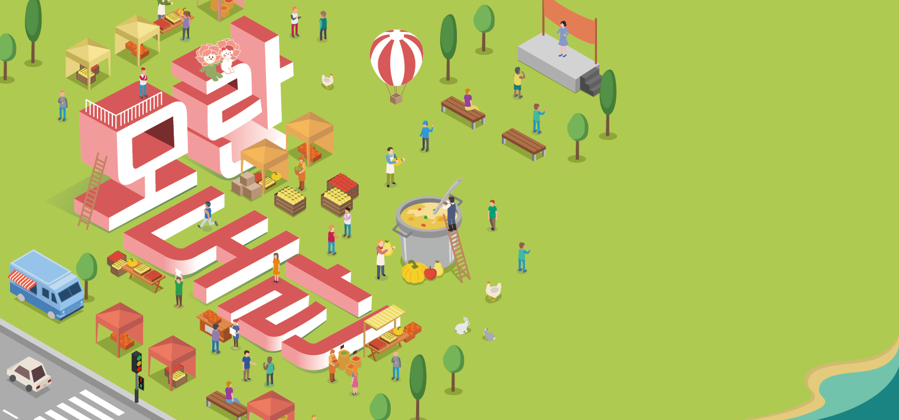

모란시장 BX/BI Design
모란도란
- #BX/BI 디자인
- #팀 프로젝트
- #반응형 웹 디자인

Project Info
작업 형태
팀 프로젝트
기여도
60%(기획, 디자인)
기간
2020.11
사용 툴
Photoshop, Illustrator
Overview
“전통시장 규모 성장”
모란민속 5일 장의 규모 성장에 따라, 복잡해진 동선 문제를 해결하고
가시성을 보완할 서비스를 제안합니다.
또한 지역 상권 활성화도 기대할 수 있습니다.
왜 선정했을까?
모란민속 5일 장에 발걸음 하는 사람들은 끊이지 않고 있지만
온라인 시장의 활성화로 인해 현장에 가지 않아도 필요한 물품을
구매할 수 있게 되면서, 현대인의 소비패턴에 큰 변화가 생겼습니다.
이에 따라 전통시장 또한 재정비를 필요로 하게 되어 선정했습니다.